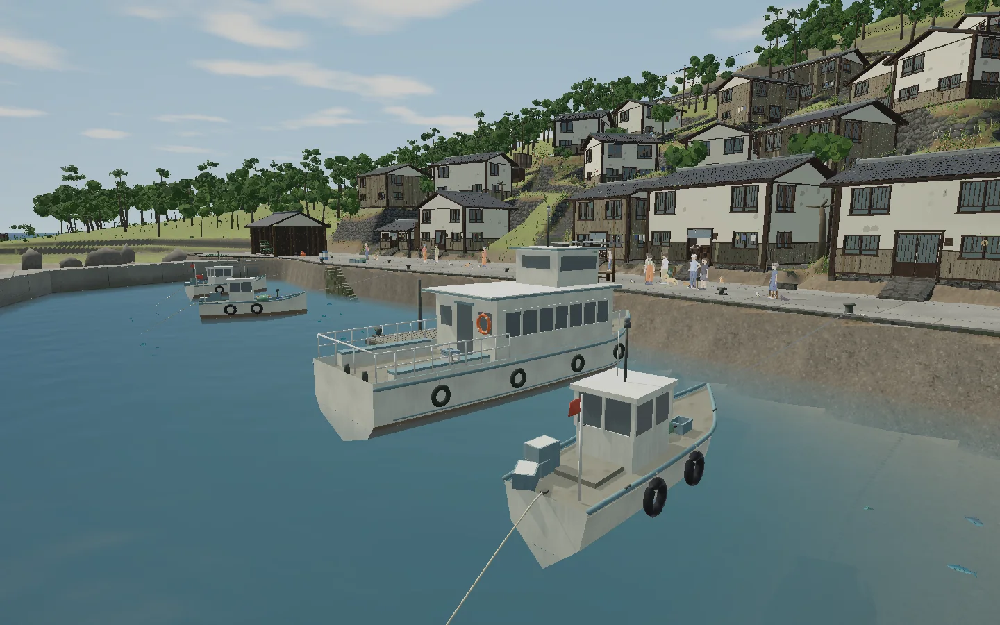

01家でのんびり / HOME
縁側で、ひと眠り。
家族のそばで昼寝をしたり、ちょっといたずらをしたり。
おやつをねだるのも、大事な仕事。
瀬戸内の、小さな島へ。
家族と帰省した、夏の島。
8月1日、渡船に揺られて
おじいちゃんとおばあちゃんの島へ。
猫の目線で過ごす、はじめての31日間。
ただいま開発中 / 公開時期未定

A CAT'S SUMMER VACATION
ふだんは都会の家で暮らす、一匹の猫。
夏休み、家族と一緒に
瀬戸内海の小さな島へ帰省します。
おじいちゃんとおばあちゃんの家を拠点に、
港や路地、畑や森へ。
潮のにおい、セミの声、縁側の風。
都会では出会えない毎日を、猫の目線で。
THE HOUSE ON THE HILL
滞在先は、坂の上にある祖父母の古い家。
縁側で昼寝をして、ちゃぶ台のそばでひと休み。
出かけたあとは、家族の待つこの家へ帰る。
31 DAYS IN AUGUST
目的をもって遊んでも、何もせず過ごしても、
夏休みは31日間で終わります。
遊びを達成したかどうかに関係なく、日付は進みます。家で眠り続けていても、8月31日には家族と一緒に都会へ帰ります。
天気や来客、島の人の日課は日ごとに決まっています。会いに行くたびに、相手との話が少しずつ進みます。
何度も訪ねた相手、昼寝をした場所。急かす課題も採点もない、自分だけの夏休みです。
THREE WAYS TO SPEND THE DAY
家でのんびり。集落で、人や猫と。
山で、動物や自然と。毎日、好きな方へ。以下は制作中・制作予定の内容です。
家族のそばで昼寝をしたり、ちょっといたずらをしたり。
おやつをねだるのも、大事な仕事。
島の人に甘えたり、釣り人に寄り添ったり。
島の猫や犬とも、少しずつ顔なじみに。
鹿やイノシシ、サルが暮らす北の丘へ。
けんかも、手助けも、仲よくなるのも、ここから。
TALK WITH ANIMALS
主人公は、種をこえて動物と言葉で話せます。
雑談も、誘いも、口げんかも、仲直りも。
人間には、いつもの鳴き声に聞こえるけれど。会話の見せ方は検討中です。
01 / SHRINE
海を見下ろす神社の境内。
犬を連れた島の人と、顔を合わせる。
02 / ORCHARD
丘の上で働く島の人。
足元に、そっとすり寄ってみようか。
03 / SCHOOL
丘の上の、木造の小さな学校。
人のいない校庭も、猫の通り道。
04 / HARBOUR
漁船のそばで働く人たち。
魚のおこぼれ、もらえるかな。
A SMALL ISLAND, A BIG PLAYGROUND
港、路地、神社、学校、田んぼ、その先の小島。
小さな島には、猫だけの通り道がある。
森と集落と港がある、小さな島。まわりには、重なり合う島影。
開発中のゲーム画面 · 2026年11月12日更新GAME INFORMATION
この島で過ごす31日間を、ただいま制作中。
遊べる日まで、もう少しお待ちください。
BEFORE YOUR VISIT
現在は開発中です。このページでは、ゲームのコンセプトと開発中の画面を紹介しています。公開時期は未定です。
本編は Steam（Windows）での販売を予定しています。あわせて、PCとスマートフォンのブラウザで無料で遊べる体験版（猫の家から港まで）を出す予定です。
都会で飼われている猫になり、家族と帰省した瀬戸内の島で、ゲーム内の8月1日から31日までを過ごす3Dゲームです。虫を追ったり、おやつをねだったり、島の人や動物と出会ったり。何をしても、何もしなくても、31日間で夏休みは終わります。
ゲーム内課金はありません。本編に広告は入りません。体験版には広告を入れる予定ですが、プレイ中に割り込む広告は出さない方針です。
このページの画像は、すべて開発中のゲーム画面です。見た目や遊びの内容、対応環境などは今後変更する可能性があります。
凪いだ海の向こうで、